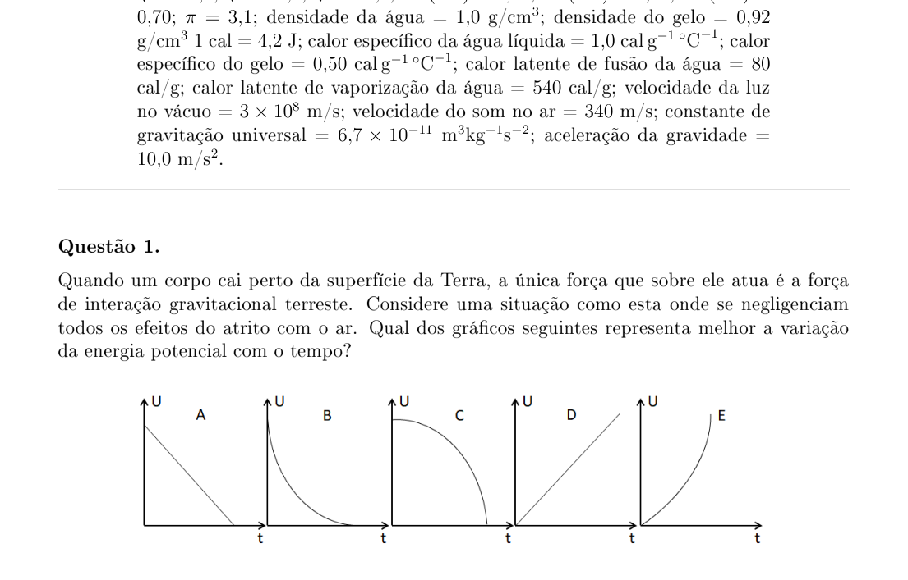
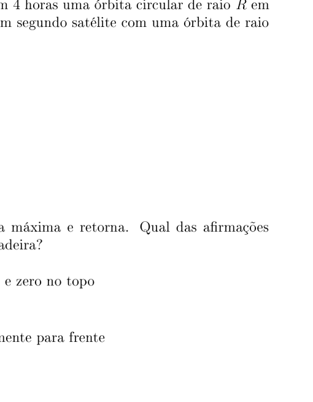
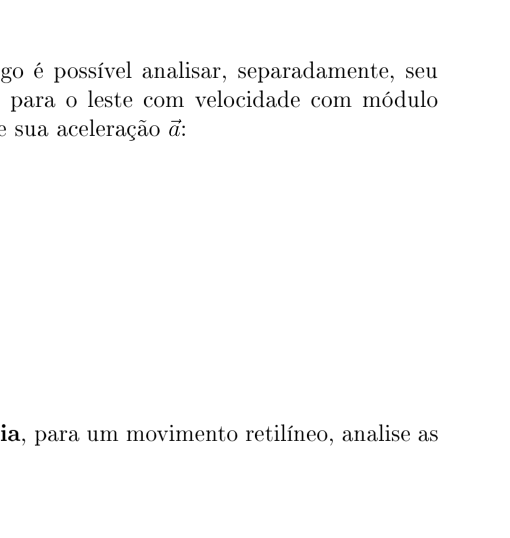
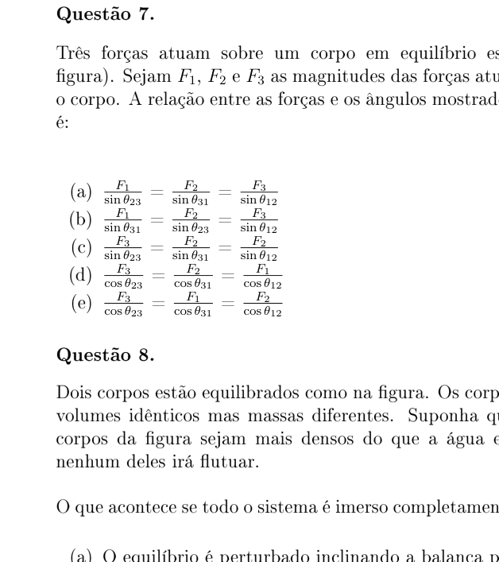
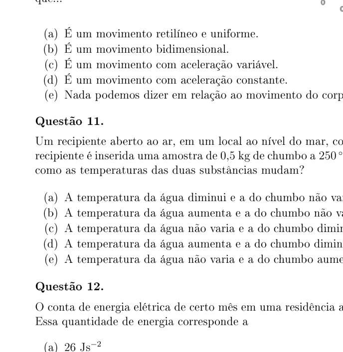
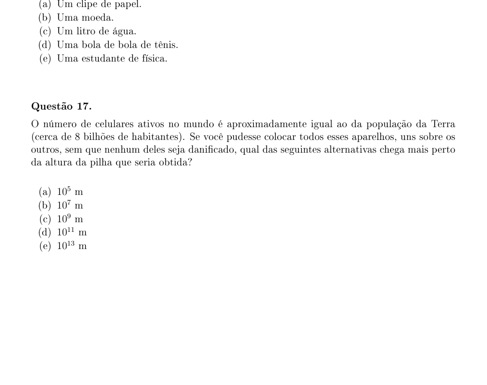

Quando um corpo cai perto da superfície da Terra, a única força que sobre ele atua é a força de interação gravitacional terrestre. Considere uma situação como esta onde se negligenciam todos os efeitos do atrito com o ar. Qual dos gráficos seguintes representa melhor a variação da energia potencial com o tempo?
- A. gráfico A
- B. gráfico B
- C. gráfico C
- D. gráfico D
- E. gráfico E

Graphs of potential energy vs timeTopic: Newtonian Mechanics, Conservation of Energy Metodi: Kinematic Equations, Energy Conservation Method Competenze: Physical Reasoning, Diagrammatic Reasoning Objects: — Fonte: Testo (PDF) — p.2
Quando un corpo cade vicino alla superficie della Terra, l’unica forza che agisce su di esso è la forza di interazione gravitazionale terrestre. Considerate una situazione come questa in cui tutti gli effetti dello scatto con l’aria vengono trascurati. Quale dei grafici seguenti rappresenta meglio la variazione dell’energia potenziale nel tempo?
- A grafico A
- B. grafico B
- C. grafico C
- D grafico D
- **E ** grafico E
Grafici di potenziale energia vs tempo
Topic: Newtonian Mechanics, Conservation of Energy Metodi: Kinematic Equations, Energy Conservation Method Competenze: Physical Reasoning, Diagrammatic Reasoning Objects: — Fonte: Testo (PDF) — p.2
When a body falls close to the Earth’s surface, the only force acting on it is the earth’s gravitational interaction force. Consider a situation like this where all the effects of friction with air are neglected. Which of the following graphs best represents the change in potential energy over time?
- A chart A
- **B ** chart B
- C chart C
- **D ** chart D
- **E ** Graph E
The following table shows the results of the study:
Topic: Newtonian Mechanics, Conservation of Energy Metodi: Kinematic Equations, Energy Conservation Method Competenze: Physical Reasoning, Diagrammatic Reasoning Objects: — Fonte: Testo (PDF) — p.2
Um ovo é colocado em uma solução de água e sal. O que pode acontecer?
- A. O ovo afundará no fundo do recipiente.
- B. O ovo flutuará na superfície da solução.
- C. O ovo permanecerá suspenso no meio da solução.
- D. A posição do ovo dependerá da densidade da solução.
- E. A posição do ovo dependerá da intensidade da aceleração da gravidade local.
Topic: Fluid Mechanics Metodi: Hydrostatic Equilibrium Competenze: Physical Reasoning Objects: — Fonte: Testo (PDF) — p.2
Un uovo viene messo in una soluzione di acqua e sale. Che cosa potrebbe succedere?
- A. L’uovo affonderà sul fondo del contenitore.
- B. L’uovo fluttuerà sulla superficie della soluzione.
- C. L’ uovo rimarrà sospeso nel mezzo della soluzione.
- D. La posizione dell’uovo dipenderà dalla densità della soluzione.
- E. La posizione dell’uovo dipenderà dall’intensità dell’accelerazione della gravità locale.
Topic: Fluid Mechanics Metodi: Hydrostatic Equilibrium Competenze: Physical Reasoning Objects: — Fonte: Testo (PDF) — p.2
An egg is placed in a solution of water and salt. What could happen?
- A. The egg will sink to the bottom of the container.
- B. The egg will float on the surface of the solution.
- C. The egg will remain suspended in the middle of the solution. The position of the egg will depend on the density of the solution.
- E. The position of the egg will depend on the intensity of the local gravity acceleration.
Topic: Fluid Mechanics Metodi: Hydrostatic Equilibrium Competenze: Physical Reasoning Objects: — Fonte: Testo (PDF) — p.2
Considere a situação em que um satélite percorre em 4 horas uma órbita circular de raio em torno de certo planeta. Qual o período orbital de um segundo satélite com uma órbita de raio em torno do mesmo planeta?
- A. 4 h
- B. 8 h
- C. 16 h
- D. 32 h
- E. 64 h
Topic: Gravitation Metodi: Kepler’s Laws Competenze: Mathematical Modeling Objects: Satellite, Planet Fonte: Testo (PDF) — p.2
Considerate la situazione in cui un satellite percorre in 4 ore un’orbita circolare di raggio intorno a un pianeta. Qual è il periodo orbitale di un secondo satellite con un raggio di orbita intorno allo stesso pianeta?
- A. 4 h
- B. 8 h
- C. 16 h
- D. 32 h
- E. 64 h
Topic: Gravitation Metodi: Kepler’s Laws Competenze: Mathematical Modeling Objects: Satellite, Planet Fonte: Testo (PDF) — p.2
Considere a situação em que um satélite percorre em 4 horas uma órbita circular de raio em torno de certo planeta. What is the orbital period of a second satellite with a radius orbit around the same planet?
- A. 4 h
- B. 8 h
- C. 16 h
- D. 32 h
- E. 64 h
Topic: Gravitation Metodi: Kepler’s Laws Competenze: Mathematical Modeling Objects: Satellite, Planet Fonte: Testo (PDF) — p.2
Uma pedra é lançada para cima, atinge sua altura máxima e retorna. Qual das afirmações seguintes, em relação à aceleração da pedra, é verdadeira?
- A. Varia continuamente, sendo máxima no início e zero no topo
- B. Muda de sinal quando a pedra chega no topo
- C. Permanece sempre constante
- D. No ponto mais alto, é direcionada horizontalmente para frente
- E. Varia, sendo zero ao início e máxima no topo
Topic: Newtonian Mechanics Metodi: Kinematic Equations, Free-Body Diagram Competenze: Physical Reasoning Objects: Projectile Fonte: Testo (PDF) — p.2
Una pietra viene lanciata su, raggiunge la sua altezza massima e ritorna. Quale delle seguenti affermazioni in relazione all’accelerazione della pietra è vera?
- A. Varia continuamente, con massimo all’inizio e zero al di sopra
- B. Cambia segnale quando la pietra arriva al vertice
- C. Rimane sempre costante
- D. Al punto più alto, è orientata orizzontalmente in avanti
- E. Variabile, zero all’inizio e massimo al massimo
Topic: Newtonian Mechanics Metodi: Kinematic Equations, Free-Body Diagram Competenze: Physical Reasoning Objects: Projectile Fonte: Testo (PDF) — p.2
A stone is thrown up, reaches its maximum height and returns. Which of the following statements regarding the acceleration of the stone is true?
- A. Continuously variable, with maximum at the beginning and zero at the top
- B. Switch signal when the stone reaches the top
- C. It remains constant at all times
- D. At the highest point, it is oriented horizontally forward
- E. Variable, being zero at the beginning and maximum at the top
Topic: Newtonian Mechanics Metodi: Kinematic Equations, Free-Body Diagram Competenze: Physical Reasoning Objects: Projectile Fonte: Testo (PDF) — p.2
Velocidade e aceleração são grandezas vetoriais, logo é possível analisar, separadamente, seu módulo, direção e sentido. Se um objeto se move para o leste com velocidade com módulo decrescente, podemos dizer sobre sua velocidade e sua aceleração :
- A. e apontam para o leste.
- B. e apontam para o oeste.
- C. aponta para o leste e para o oeste.
- D. aponta para o leste e para o leste.
- E. aponta para o leste e .
Topic: Newtonian Mechanics Metodi: Kinematic Equations, Vector Decomposition Competenze: Physical Reasoning Objects: — Fonte: Testo (PDF) — p.3
La velocità e l’accelerazione sono grandi dimensioni vetoriali, quindi è possibile analizzare separatamente il loro modulo, direzione e senso. Se un oggetto si muove verso est a velocità in decrescente modulo, possiamo dire della sua velocità e della sua accelerazione :
- A e puntano verso est.
- B. e puntano verso ovest.
- C. punta verso est e verso ovest.
- D. punta verso est e verso est.
- E. punta verso est e .
Topic: Newtonian Mechanics Metodi: Kinematic Equations, Vector Decomposition Competenze: Physical Reasoning Objects: — Fonte: Testo (PDF) — p.3
Speed and acceleration are vector quantities, so you can analyze their module, direction and direction separately. If an object is moving eastward at a decreasing speed, we can say about its speed and its acceleration :
- **A ** and pointing east.
- **B ** and point to the west.
- C. points to the east and to the west.
- D. points to the east and to the east.
- **E ** points east and .
Topic: Newtonian Mechanics Metodi: Kinematic Equations, Vector Decomposition Competenze: Physical Reasoning Objects: — Fonte: Testo (PDF) — p.3
Em relação aos conceitos deslocamento e distância, para um movimento retilíneo, analise as afirmações abaixo e diga qual é verdadeira.
- A. Sempre são iguais.
- B. A distância sempre é maior do que o deslocamento.
- C. A distância sempre é positiva enquanto que o deslocamento pode ser negativo.
- D. O deslocamento sempre é maior.
- E. O deslocamento e a distância sempre têm o mesmo sinal.
Topic: Newtonian Mechanics Metodi: Kinematic Equations Competenze: Physical Reasoning Objects: — Fonte: Testo (PDF) — p.3
Per quanto riguarda i concetti di spostamento e distanza, per un movimento reticolo, analizzate le affermazioni qui sotto e dite quale è vero.
- MSK1 - Sono sempre uguali.
- B. La distanza è sempre maggiore del spostamento.
- C. La distanza è sempre positiva mentre lo spostamento può essere negativo.
- D. Il spostamento è sempre maggiore.
- E. Lo spostamento e la distanza hanno sempre lo stesso segnale.
Topic: Newtonian Mechanics Metodi: Kinematic Equations Competenze: Physical Reasoning Objects: — Fonte: Testo (PDF) — p.3
With respect to the concepts of displacement and distance, for a reticle motion, analyze the statements below and tell which one is true.
- They’re always the same.
- B. The distance is always greater than the displacement.
- C. The distance is always positive while the displacement can be negative.
- MSK1/>D ** The displacement is always greater.
- The displacement and distance always have the same signal.
Topic: Newtonian Mechanics Metodi: Kinematic Equations Competenze: Physical Reasoning Objects: — Fonte: Testo (PDF) — p.3
Três forças atuam sobre um corpo em equilíbrio estático (ver figura). Sejam , e as magnitudes das forças atuantes sobre o corpo. A relação entre as forças e os ângulos mostrados na figura é:
(A)
(B)
(C)
(D)
(E)

Three forces on body in static equilibriumTopic: Newtonian Mechanics, Rigid Body Statics Metodi: Free-Body Diagram, Vector Decomposition Competenze: Diagrammatic Reasoning, Mathematical Modeling Objects: — Fonte: Testo (PDF) — p.3
Tre forze agiscono su un corpo in equilibrio statico (vedi figura). Se , e sono le magnitudini delle forze attive sul corpo. Il rapporto tra le forze e gli angoli mostrati nella figura è:
(A)
(B)
(C)
(D)
(E)
Three forces on body in static equilibrium
Topic: Newtonian Mechanics, Rigid Body Statics Metodi: Free-Body Diagram, Vector Decomposition Competenze: Diagrammatic Reasoning, Mathematical Modeling Objects: — Fonte: Testo (PDF) — p.3
Three forces act on a body in static equilibrium (see figure). The magnitude of the forces acting on the body shall be , and . The relationship between forces and angles shown in the figure is:
(A)
(B)
(C)
(D)
(E)
Three forces on body in static equilibrium
Topic: Newtonian Mechanics, Rigid Body Statics Metodi: Free-Body Diagram, Vector Decomposition Competenze: Diagrammatic Reasoning, Mathematical Modeling Objects: — Fonte: Testo (PDF) — p.3
Dois corpos estão equilibrados como na figura. Os corpos possuem volumes idênticos mas massas diferentes. Suponha que todos os corpos da figura sejam mais densos do que a água e, portanto, nenhum deles irá flutuar.
O que acontece se todo o sistema é imerso completamente na água?
- A. O equilíbrio é perturbado inclinando a balança para a direita.
- B. O equilíbrio é perturbado inclinando a balança para a esquerda.
- C. O equilíbrio não é perturbado.
- D. As trações nos fios aumentam igualmente.
- E. A tração no fio da esquerda aumenta mais do que o da direita.

Balance with two equal-volume bodiesTopic: Fluid Mechanics, Newtonian Mechanics Metodi: Hydrostatic Equilibrium, Free-Body Diagram Competenze: Physical Reasoning, Diagrammatic Reasoning Objects: Lever Fonte: Testo (PDF) — p.3
Due corpi sono in equilibrio come in questa figura. I corpi hanno volumi identici ma masse diverse. Supponiamo che tutti i corpi della figura siano più densi dell’acqua e quindi nessuno di loro fluttuerà.
E se l’intero sistema fosse completamente immerso nell’acqua?
- A. L’equilibrio viene disturbato inclinando la bilancia a destra.
- B. L’equilibrio viene disturbato inclinando la bilancia a sinistra.
- C. L’equilibrio non è disturbato.
- D. Le trazioni dei fili aumentano anche.
- E. La trazione del filo sinistro aumenta più di quella del filo destro.
Balance with two equal-volume bodies
Topic: Fluid Mechanics, Newtonian Mechanics Metodi: Hydrostatic Equilibrium, Free-Body Diagram Competenze: Physical Reasoning, Diagrammatic Reasoning Objects: Lever Fonte: Testo (PDF) — p.3
Two bodies are balanced as in the figure. The bodies have identical volumes but different masses. Suppose all the bodies in the figure are denser than water, and therefore none of them will float.
What happens if the whole system is completely submerged in water?
- A. The balance is disturbed by tilting the scale to the right.
- B. The balance is disturbed by tilting the scale to the left.
- C. The balance is not disturbed.
- D. The traction in the wires increases as well.
- E. The traction on the left wire increases more than the right wire.
Balance with two equal-volume bodies
Topic: Fluid Mechanics, Newtonian Mechanics Metodi: Hydrostatic Equilibrium, Free-Body Diagram Competenze: Physical Reasoning, Diagrammatic Reasoning Objects: Lever Fonte: Testo (PDF) — p.3
Sabendo que o calor latente de vaporização da água é J/kg, quanto calor é necessário, aproximadamente, para vaporizar 2,0 g de água à temperatura de ebulição e à pressão atmosférica?
- A. 8,4 J
- B. 500 J
- C. 670 J
- D. 840 J
- E. 4500 J
Topic: Thermodynamics Metodi: First Law of Thermodynamics Competenze: Mathematical Modeling, Unit Conversion Objects: — Fonte: Testo (PDF) — p.4
Sapendo che il calore latente di vaporizzazione dell’acqua è J/kg, quanto calore circa è necessario per vaporizzare 2,0 g di acqua a temperatura di ebollizione e pressione atmosferica?
- A. 8,4 J
- B. 500 J
- C. 670 J
- D. 840 J
- E. 4500 J
Topic: Thermodynamics Metodi: First Law of Thermodynamics Competenze: Mathematical Modeling, Unit Conversion Objects: — Fonte: Testo (PDF) — p.4
Since the latent heat of water vaporization is J/kg, how much heat is required to vaporise approximately 2,0 g of water at boiling temperature and atmospheric pressure?
- A. 8,4 J
- B. 500 J
- C. 670 J
- D. 840 J
- E. 4500 J
Topic: Thermodynamics Metodi: First Law of Thermodynamics Competenze: Mathematical Modeling, Unit Conversion Objects: — Fonte: Testo (PDF) — p.4
Os pontos representados no gráfico abaixo foram obtidos a partir do registro das posições registradas em função do tempo, durante o movimento retilíneo de um corpo.
Em relação a esse movimento podemos dizer que…
- A. É um movimento retilíneo e uniforme.
- B. É um movimento bidimensional.
- C. É um movimento com aceleração variável.
- D. É um movimento com aceleração constante.
- E. Nada podemos dizer em relação ao movimento do corpo.

Position vs time graph for rectilinear motionTopic: Newtonian Mechanics Metodi: Kinematic Equations, Graph Linearization Competenze: Diagrammatic Reasoning, Physical Reasoning Objects: — Fonte: Testo (PDF) — p.4
I punti rappresentati nel grafico seguente sono stati ottenuti dal registro delle posizioni registrate in funzione del tempo durante il movimento reticolo di un corpo.
In relazione a questo movimento possiamo dire che…
- A. È un movimento reticolo e uniforme.
- MSK0/>B.** È un movimento bidimensionale.
- C. È un movimento a variabile accelerazione.
- D. È un movimento con costante accelerazione. Non possiamo dire nulla sul movimento del corpo.
Position vs time graph for rectilinear motion
Topic: Newtonian Mechanics Metodi: Kinematic Equations, Graph Linearization Competenze: Diagrammatic Reasoning, Physical Reasoning Objects: — Fonte: Testo (PDF) — p.4
The points represented in the graph below were obtained from the recording of the positions recorded in time, during the reticle movement of a body.
In relation to this movement we can say that…
- A It is a straight and uniform movement.
- It’s a two-dimensional movement.
- C. It is a motion with variable acceleration.
- D. It is a constantly accelerating motion. We can’t say anything about the movement of the body.
The position vs time graph for rectilinear motion
Topic: Newtonian Mechanics Metodi: Kinematic Equations, Graph Linearization Competenze: Diagrammatic Reasoning, Physical Reasoning Objects: — Fonte: Testo (PDF) — p.4
Um recipiente aberto ao ar, em um local ao nível do mar, contém 1 kg de água a 10 °C. Neste recipiente é inserida uma amostra de 0,5 kg de chumbo a 250 °C. Como resultado dessa inserção, como as temperaturas das duas substâncias mudam?
- A. A temperatura da água diminui e a do chumbo não varia.
- B. A temperatura da água aumenta e a do chumbo não varia.
- C. A temperatura da água não varia e a do chumbo diminui.
- D. A temperatura da água aumenta e a do chumbo diminui.
- E. A temperatura da água não varia e a do chumbo aumenta.
Topic: Thermodynamics Metodi: First Law of Thermodynamics Competenze: Physical Reasoning Objects: Container Fonte: Testo (PDF) — p.4
Un contenitore aperto all’aria, situato a livello del mare, contiene 1 kg di acqua a 10 °C. In questo recipiente viene inserito un campione di 0,5 kg di piombo a 250 °C. Come cambiano le temperature delle due sostanze come risultato di questa inserzione?
- A. La temperatura dell’acqua scende e quella del piombo non cambia.
- B. La temperatura dell’acqua aumenta e quella del piombo non cambia.
- C. La temperatura dell’acqua non varia e quella del piombo diminuisce.
- D. La temperatura dell’acqua aumenta e quella del piombo diminuisce.
- E. La temperatura dell’acqua non cambia e quella del piombo aumenta.
Topic: Thermodynamics Metodi: First Law of Thermodynamics Competenze: Physical Reasoning Objects: Container Fonte: Testo (PDF) — p.4
An open-air container at a location at sea level contains 1 kg of water at 10 °C. A sample of 0,5 kg of lead at 250 °C is inserted into this container. As a result of this insertion, how do the temperatures of the two substances change?
- A. The water temperature decreases and the lead temperature does not change.
- B. The water temperature rises and the lead temperature does not change.
- C. The water temperature does not change and that of lead decreases.
- **D ** The water temperature rises and that of lead decreases.
- E. The water temperature does not change and lead temperature increases.
Topic: Thermodynamics Metodi: First Law of Thermodynamics Competenze: Physical Reasoning Objects: Container Fonte: Testo (PDF) — p.4
O conta de energia elétrica de certo mês em uma residência apresenta um consumo de 92 kWh. Essa quantidade de energia corresponde a
- A.
- B.
- C.
- D.
- E.
Topic: Circuits Metodi: Dimensional Analysis Competenze: Unit Conversion, Mathematical Modeling Objects: — Fonte: Testo (PDF) — p.5
Il conto di energia elettrica di un mese in una residenza ha un consumo di 92 kWh. Questa quantità di energia corrisponde a
- A.
- B.
- C.
- D.
- E.
Topic: Circuits Metodi: Dimensional Analysis Competenze: Unit Conversion, Mathematical Modeling Objects: — Fonte: Testo (PDF) — p.5
The electricity bill for a month in a home has a consumption of 92 kWh. This energy quantity corresponds to
- A.
- B.
- C.
- D.
- E.
Topic: Circuits Metodi: Dimensional Analysis Competenze: Unit Conversion, Mathematical Modeling Objects: — Fonte: Testo (PDF) — p.5
Os núcleos de substâncias radioativas não são estáveis e podem se desintegrar ao longo do tempo, emitindo radiação e formando outras substâncias. Uma característica importante dessas substâncias é o seu tempo de vida média, representado por , que é o intervalo de tempo em que metade da massa de uma amostra radioativa se desintegra. Suponha que uma amostra de 24 gramas de uma substância radioativa com tempo de vida média minutos seja analisada. Após 36 minutos, qual é aproximadamente a massa da substância radioativa remanescente?
- A. 1,5 g
- B. 3 g
- C. 6 g
- D. 9 g
- E. 12 g
Topic: Nuclear & Particle Physics Metodi: Radioactive Decay Law Competenze: Mathematical Modeling Objects: Nucleus Fonte: Testo (PDF) — p.5
I nuclei di sostanze radioattive non sono stabili e possono disintegrarsi nel tempo, emettendo radiazioni e formando altre sostanze. Una caratteristica importante di queste sostanze è il loro tempo di vita medio, rappresentato da , che è l’intervallo di tempo in cui metà della massa di un campione radioattivo si disintegra. Supponiamo che un campione di 24 grammi di una sostanza radioattiva con una durata media minuti sia analizzato. Dopo 36 minuti, qual è la massa della sostanza radioattiva residuo?
- A. 1,5 g
- B. 3 g
- C. 6 g
- D. 9 g
- E. 12 g
Topic: Nuclear & Particle Physics Metodi: Radioactive Decay Law Competenze: Mathematical Modeling Objects: Nucleus Fonte: Testo (PDF) — p.5
Nucleus of radioactive substances are unstable and can disintegrate over time, emitting radiation and forming other substances. An important characteristic of these substances is their mean lifetime, represented by , which is the time interval in which half the mass of a radioactive sample decays. Suppose a 24 gram sample of a radioactive substance with an average lifetime of minutes is analyzed. After 36 minutes, what is the mass of the remaining radioactive substance approximately?
- A. 1,5 g
- B. 3 g
- C. 6 g
- D. 9 g
- E. 12 g
Topic: Nuclear & Particle Physics Metodi: Radioactive Decay Law Competenze: Mathematical Modeling Objects: Nucleus Fonte: Testo (PDF) — p.5
O gráfico mostra a massa de três objetos diferentes, em função do módulo do seu peso, em um planeta X. Quanto vale, em m/s², aproximadamente, a aceleração da gravidade desse planeta?
- A. 0,17
- B. 2,5
- C. 6,0
- D. 9,8
- E. 31

Mass vs weight on planet XTopic: Newtonian Mechanics, Gravitation Metodi: Graph Linearization, Dimensional Analysis Competenze: Diagrammatic Reasoning, Mathematical Modeling Objects: Planet Fonte: Testo (PDF) — p.5
Il grafico mostra la massa di tre oggetti diversi, a seconda del modulo del loro peso, su un pianeta X. Quanto vale, in m/s2, circa, l’accelerazione gravitazionale di questo pianeta?
- A. 0,17
- B. 2,5
- C. 6,0
- D. 9,8
- E. 31
*Mass vs weight on planet X *
Topic: Newtonian Mechanics, Gravitation Metodi: Graph Linearization, Dimensional Analysis Competenze: Diagrammatic Reasoning, Mathematical Modeling Objects: Planet Fonte: Testo (PDF) — p.5
The graph shows the mass of three different objects, depending on the modulus of their weight, on a planet X. What is the acceleration of this planet’s gravity in m/s2 approximately?
- A. 0,17
- B. 2,5
- C. 6,0
- D. 9,8
- E. 31
The following table shows the total number of species in the world:
Topic: Newtonian Mechanics, Gravitation Metodi: Graph Linearization, Dimensional Analysis Competenze: Diagrammatic Reasoning, Mathematical Modeling Objects: Planet Fonte: Testo (PDF) — p.5
Um satélite artificial de massa muito pequena (insignificante) respeito ao planeta em torno do qual se encontra rotando, é observado por um astrônomo. As distâncias mínima e máxima do satélite ao planeta são medidas, assim como a velocidade orbital máxima do satélite. Qual das seguintes quantidades não pode ser obtida a partir dos dados medidos?
- A. A massa do satélite.
- B. A massa do planeta.
- C. A velocidade orbital mínima do satélite.
- D. O semi-eixo maior da órbita do satélite.
- E. O período da órbita do satélite.
Topic: Gravitation, Astrophysics Metodi: Kepler’s Laws, Conservation of Energy, Conservation of Momentum Competenze: Physical Reasoning, Mathematical Modeling Objects: Satellite, Planet Fonte: Testo (PDF) — p.6
Un satellite artificiale di massa molto piccola (insignificante) rispetto al pianeta intorno al quale si trova a rotare, è osservato da un astronomo. Le distanze minime e massime tra il satellite e il pianeta sono misurate, così come la velocità massima orbitale del satellite. Quali delle seguenti quantità non possono essere ottenute dai dati misurati?
- **A ** La massa del satellite.
- B. La massa del pianeta.
- C. La velocità orbitale minima del satellite.
- D. Il semiaixo più grande dell’orbita del satellite.
- E. Il periodo di orbita del satellite.
Topic: Gravitation, Astrophysics Metodi: Kepler’s Laws, Conservation of Energy, Conservation of Momentum Competenze: Physical Reasoning, Mathematical Modeling Objects: Satellite, Planet Fonte: Testo (PDF) — p.6
An artificial satellite of very small mass (minor) relative to the planet around which it is orbiting is observed by an astronomer. The minimum and maximum distances of the satellite to the planet are measured, as is the satellite’s maximum orbital speed. Which of the following amounts cannot be obtained from the measured data?
- The mass of the satellite.
- The mass of the planet.
- C. The minimum orbital speed of the satellite.
- **D ** The greater half-axis of the satellite’s orbit.
- **E ** The period of orbit of the satellite.
Topic: Gravitation, Astrophysics Metodi: Kepler’s Laws, Conservation of Energy, Conservation of Momentum Competenze: Physical Reasoning, Mathematical Modeling Objects: Satellite, Planet Fonte: Testo (PDF) — p.6
Na física, a ordem de grandeza e as unidades de medida são muito importantes para a interpretação correta de um problema. A seguir, listamos vários objetos da vida cotidiana, qual desses objetos tem um peso da ordem de 1 N?
- A. Um clipe de papel.
- B. Uma moeda.
- C. Um litro de água.
- D. Uma bola de bola de tênis.
- E. Uma estudante de física.
Topic: Newtonian Mechanics, Order-of-Magnitude Estimation Metodi: Order-of-Magnitude Estimation, Dimensional Analysis Competenze: Estimation & Approximation, Physical Reasoning Objects: Ball Fonte: Testo (PDF) — p.6
In fisica, l’ordine di grandezza e le unità di misura sono molto importanti per interpretare correttamente un problema. Quindi, vi faccio un elenco di oggetti di vita quotidiana, quale di questi oggetti ha un peso dell’ordine di 1 N?
- MSK1/A. Un clip di carta.
- B. Una moneta.
- 1 litro d’acqua.
- Una palla da tennis.
- Un studente di fisica.
Topic: Newtonian Mechanics, Order-of-Magnitude Estimation Metodi: Order-of-Magnitude Estimation, Dimensional Analysis Competenze: Estimation & Approximation, Physical Reasoning Objects: Ball Fonte: Testo (PDF) — p.6
In physics, order of magnitude and units of measurement are very important for correctly interpreting a problem. Next, we list several objects from everyday life, which of these objects has a weight of the order of 1 N?
- A sheet of paper.
- A currency.
- **C ** One liter of water.
- A tennis ball.
- MSK1 A physics student.
Topic: Newtonian Mechanics, Order-of-Magnitude Estimation Metodi: Order-of-Magnitude Estimation, Dimensional Analysis Competenze: Estimation & Approximation, Physical Reasoning Objects: Ball Fonte: Testo (PDF) — p.6
O número de celulares ativos no mundo é aproximadamente igual ao da população da Terra (cerca de 8 bilhões de habitantes). Se você pudesse colocar todos esses aparelhos, uns sobre os outros, sem que nenhum deles seja danificado, qual das seguintes alternativas chega mais perto da altura da pilha que seria obtida?
- A. m
- B. m
- C. m
- D. m
- E. m
Topic: Order-of-Magnitude Estimation Metodi: Order-of-Magnitude Estimation Competenze: Estimation & Approximation Objects: — Fonte: Testo (PDF) — p.7
Il numero di cellulari attivi nel mondo è circa uguale a quello della popolazione terrestre (circa 8 miliardi di abitanti). Se poteste mettere tutti questi dispositivi, uno sopra l’altro, senza che nessuno di loro sia danneggiato, quale delle seguenti alternative si avvicina di più alla altezza della batteria che si ottiene?
- A. m
- B. m
- C. m
- D. m
- E. m
Topic: Order-of-Magnitude Estimation Metodi: Order-of-Magnitude Estimation Competenze: Estimation & Approximation Objects: — Fonte: Testo (PDF) — p.7
The number of active cell phones in the world is roughly equal to the population of Earth (about 8 billion inhabitants). If you could put all these devices on top of each other without any of them being damaged, which of the following alternatives gets closer to the height of the battery that would be obtained?
- A. m
- B. m
- C. m
- D. m
- E. m
Topic: Order-of-Magnitude Estimation Metodi: Order-of-Magnitude Estimation Competenze: Estimation & Approximation Objects: — Fonte: Testo (PDF) — p.7
As grandezas vetoriais na física são grandezas que possuem, além de módulo, direção e sentido. Qual das alternativas a seguir representa uma grandeza vetorial com a respectiva unidade no sistema internacional (SI)?
- A. peso — quilograma
- B. massa — quilograma
- C. peso — Newton
- D. energia — Newton
- E. pressão — Pascal
Topic: Newtonian Mechanics Metodi: Dimensional Analysis Competenze: Physical Reasoning, Unit Conversion Objects: — Fonte: Testo (PDF) — p.7
Le grandi vetrici in fisica sono grandi dimensioni che hanno, oltre a modulo, direzione e senso. Qual è l’alternativa che rappresenta una grandezza vetoriale con la relativa unità nel sistema internazionale (SI)?
- A. peso kg
- B. massa chilogrammo
- C. peso Newton
- D. energia Newton
- E. pressione Pascale
Topic: Newtonian Mechanics Metodi: Dimensional Analysis Competenze: Physical Reasoning, Unit Conversion Objects: — Fonte: Testo (PDF) — p.7
Vector quantities in physics are quantities that have, in addition to modulus, direction and direction. Which of the following alternatives represents a vector quantity with its unit in the International System (SI)?
- **A ** weight kg
- **B ** weight kg
- C. weight Newton
- **D ** energy Newton
- E pressure Pascal
Topic: Newtonian Mechanics Metodi: Dimensional Analysis Competenze: Physical Reasoning, Unit Conversion Objects: — Fonte: Testo (PDF) — p.7
Um sistema composto por uma mistura de água e gelo é aquecido. Qual dos gráficos a seguir representa corretamente a relação entre a temperatura do sistema e o calor fornecido?
- A. Gráfico A
- B. Gráfico B
- C. Gráfico C
- D. Gráfico D
- E. Gráfico E

Temperature vs heat supplied graphs A–ETopic: Thermodynamics Metodi: First Law of Thermodynamics, Thermodynamic Cycle Analysis Competenze: Diagrammatic Reasoning, Physical Reasoning Objects: — Fonte: Testo (PDF) — p.7
Un sistema composto da un misto di acqua e ghiaccio è riscaldato. Quale dei grafici seguenti rappresenta correttamente il rapporto tra la temperatura del sistema e il calore fornito?
- A. Grafico A
- B. Grafico B
- C. Grafico C
- D. Grafico D
- E. Grafico E
Temperature vs heat supplied graphs AE
Topic: Thermodynamics Metodi: First Law of Thermodynamics, Thermodynamic Cycle Analysis Competenze: Diagrammatic Reasoning, Physical Reasoning Objects: — Fonte: Testo (PDF) — p.7
A system composed of a mixture of water and ice is heated. Which of the following graphs correctly represents the relationship between the system temperature and the heat supplied?
- A Graph A
- **B ** Graph B
- C. Graph C
- D Graph D
- E Graph E
The following table shows the results of the tests:
Topic: Thermodynamics Metodi: First Law of Thermodynamics, Thermodynamic Cycle Analysis Competenze: Diagrammatic Reasoning, Physical Reasoning Objects: — Fonte: Testo (PDF) — p.7
Quando dois corpos a diferentes temperaturas entram em contato térmico, acontece troca de calor entre eles. Essa troca de calor acaba quando os corpos entram em equilíbrio térmico, ou seja, atingem a mesma temperatura. Uma massa de 5 kg de água à temperatura de 10 °C é adicionada a uma massa, também de 5 kg de água a 60 °C. Desprezando a capacidade térmica do recipiente e as perdas de calor, a temperatura do equilíbrio térmico (em °C) será
- A. menor que 10 °C.
- B. menor que 40 °C.
- C. entre 10 °C e 40 °C, mais próxima de 10 °C.
- D. entre 10 °C e 40 °C, mais próxima de 40 °C.
- E. igual a 35 °C.
Topic: Thermodynamics Metodi: First Law of Thermodynamics, Conservation of Energy Competenze: Mathematical Modeling, Physical Reasoning Objects: — Fonte: Testo (PDF) — p.8
Quando due corpi a temperature diverse entrano in contatto termico, si verifica uno scambio di calore tra loro. Questo scambio di calore finisce quando i corpi raggiungono lo stesso equilibrio termico, cioè raggiungono la stessa temperatura. Un peso di 5 kg di acqua a temperatura 10 °C è aggiunto a un peso, anche 5 kg di acqua a 60 °C. Indipendentemente dalla capacità termico del recipiente e dalle perdite di calore, la temperatura di equilibrio termico (in °C) sarà
- A inferiore a 10 °C.
- B. inferiore a 40 °C.
- C. tra 10 °C e 40 °C, più vicino a 10 °C.
- D. tra 10 °C e 40 °C, più vicino a 40 °C.
- E. pari a 35 °C.
Topic: Thermodynamics Metodi: First Law of Thermodynamics, Conservation of Energy Competenze: Mathematical Modeling, Physical Reasoning Objects: — Fonte: Testo (PDF) — p.8
When two bodies at different temperatures come into contact, there is heat exchange between them. This heat exchange ends when the bodies enter thermal equilibrium, that is, they reach the same temperature. A mass of 5 kg of water at 10 °C is added to a mass, also 5 kg of water at 60 °C. The heat balance temperature (in °C) shall be the temperature of the container, regardless of the heat capacity and heat losses.
- A less than 10 °C.
- **B ** less than 40 °C.
- C. between 10 °C and 40 °C, nearest to 10 °C.
- D. between 10 °C and 40 °C, nearest to 40 °C.
- E. equal to 35 °C.
Topic: Thermodynamics Metodi: First Law of Thermodynamics, Conservation of Energy Competenze: Mathematical Modeling, Physical Reasoning Objects: — Fonte: Testo (PDF) — p.8